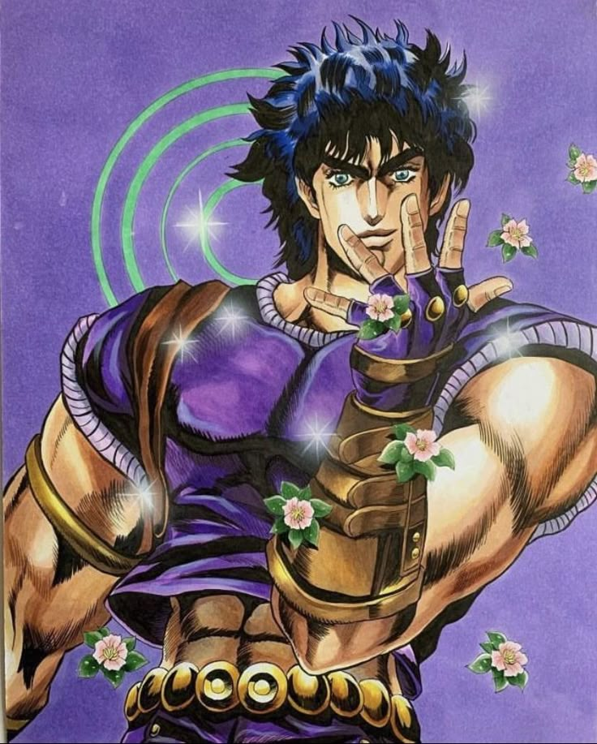
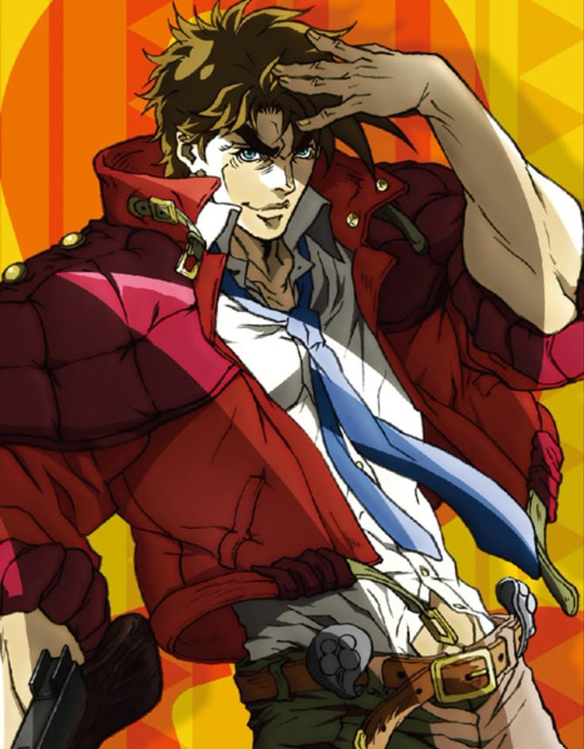
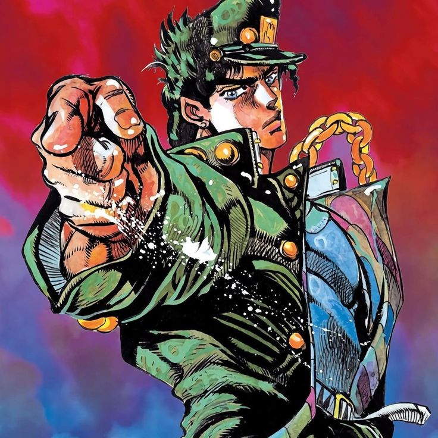
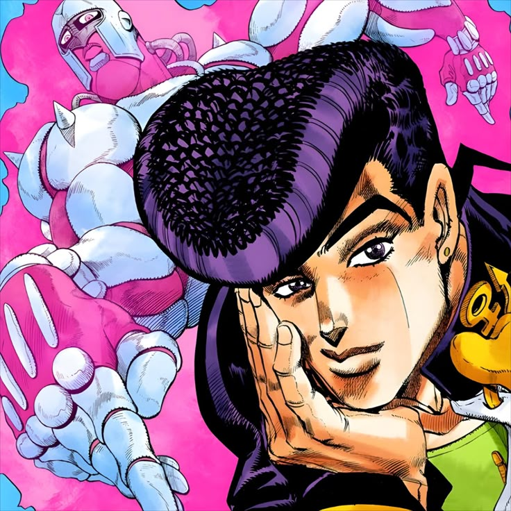
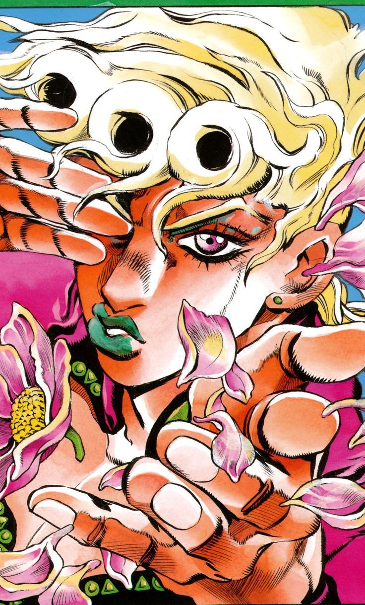
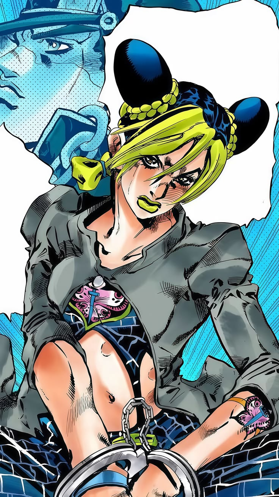
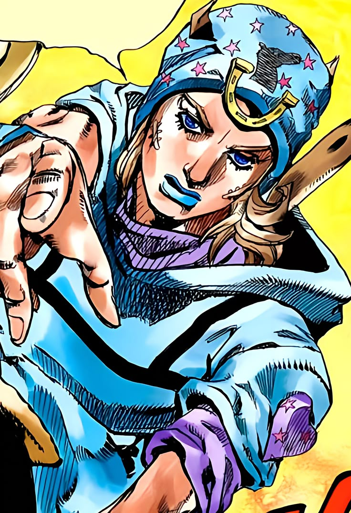
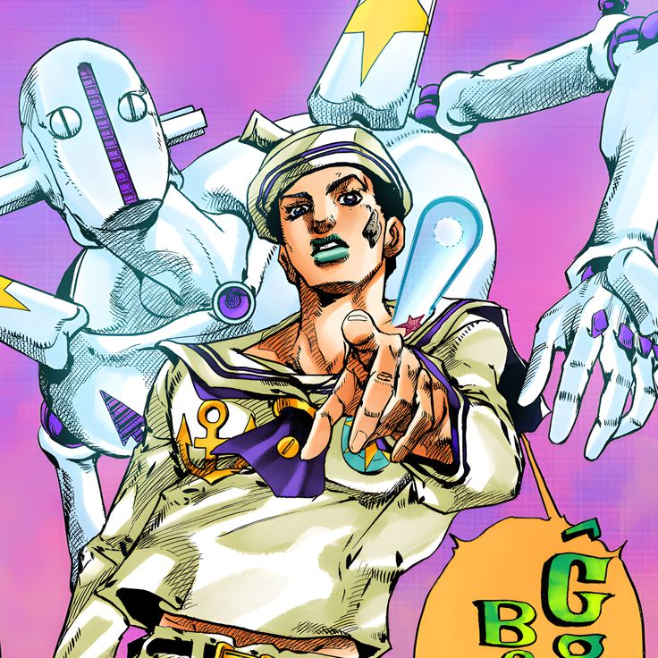

JONATHAN JOESTAR
"İki mahkum hapishane parmaklıklarından dışarı baktı; biri çamuru gördü, diğeri yıldızları."
Joestar ailesinin ilk temsilcisi. Asil bir ruh, şövalyelik onuru ve Güneş'in gücünü taşıyan Hamon ustası. Serinin temellerini atan efsanevi centilmen.

JOESTAR SOYUNUN İLK
KAHRAMANI
1880'lerin İngiltere'sinde doğan Jonathan Joestar, asil bir aileye mensup olmasının yanı sıra dürüstlüğü ve cesaretiyle tanınan bir gençtir. Evlatlık kardeşi Dio Brando ile arasında gelişen gerilim, onu hayatının en büyük sınavlarından birine sürükler.
Hamon ustası Zeppeli'den aldığı eğitimle güneş enerjisini bedenine aktarmayı öğrenen Jonathan, klasik centilmen tavırlarını koruyarak karanlık güçlere karşı mücadele eder. Onun bu yolculuğu, JoJo serisinin temel taşını oluşturur.
KARAKTER BİLGİLERİ
- Tam İsimJonathan Joestar
- LakapJoJo
- Doğum Yeriİngiltere
- YeteneğiHamon (Dalga Enerjisi)
- RolSerinin İlk Kahramanı
- SembolGüneş Halkaları
ONU EŞSİZ KILAN
NİTELİKLER
CENTİLMEN RUHU
Karşılaştığı her durumda nezaketini ve saygısını koruyan Jonathan, gerçek bir centilmenin asaletini tüm evrene kanıtlar.
HAMON USTALIĞI
Zeppeli'den öğrendiği dalga enerjisi tekniğiyle güneşin saf gücünü bedenine aktarır ve kadim karanlığa meydan okur.
JOESTAR MİRASI
Serinin ilk kahramanı olarak attığı her adım, gelecek nesil Joestar'ların yazgısını ve kan bağını şekillendiren temeldir.
YILMAZ CESARET
En trajik kayıplarda ve en güçlü düşmanların karşısında bile adalet duygusundan ve sarsılmaz cesaretinden ödün vermez.
JOSEPH JOESTAR
"Senin bir sonraki cümlen şu olacak..."
Jonathan'ın torunu. Kural tanımaz, kurnaz ve stratejik zekasıyla ön plana çıkan bir savaşçı. Dünya turunda Kadim Sütun Adamları'na karşı hayatta kalma mücadelesi.

ZEKANIN VE KURNAZLIĞIN
ZİRVESİ
Jonathan'ın aksine hiçbir centilmenlik kuralına uymayan Joseph Joestar, dövüşlerini kas gücüyle değil, tamamen akıl oyunları ve öngörülemez taktiklerle kazanır. New York'tan İtalya'ya uzanan macerasında insanlığın kadim tehditleriyle yüzleşir.
Sütun Adamları (Pillar Men) adı verilen tanrısal varlıklara karşı Hamon enerjisini ve çevresindeki her nesneyi bir silaha dönüştürme yeteneğini kullanarak hayatta kalma savaşını bir sanata dönüştürür.
KARAKTER BİLGİLERİ
- Tam İsimJoseph Joestar
- LakapJoJo / İhtiyar (Sonradan)
- Doğum Yeriİngiltere (Büyüme: ABD)
- YeteneğiHamon & Taktik Deha
- Rolİkinci Jenerasyon Lideri
- SembolÇizgili Eşarp
ONU EŞSİZ KILAN
NİTELİKLER
STRATEJİK DEHA
Düşmanının hamlelerini saniyeler öncesinden tahmin edip "Bir sonraki cümlen şu olacak" diyerek psikolojik üstünlüğü eline alır.
ESNEK DÖVÜŞ TARZI
Kırıcı Amerikan çeliğinden el bombalarına, taretlerden iplere kadar her şeyi Hamon ile birleştirerek absürt ve ölümcül tuzaklar kurar.
SADIK DOSTLUK
Caesar Zeppeli ile olan rekabeti, serinin en duygusal ve sarsılmaz yoldaşlık bağlarından birine dönüşerek gücünü pekiştirir.
UZUN ÖMÜRLÜ MİRAS
Gelecek partlarda da yaşayan, yaşlansa da oyunculuğundan ve zekasından hiçbir şey kaybetmeyen köprü bir karakterdir.
JOTARO KUJO
"Yare Yare Daze..."
Stand gücünün dünyaya tanıtıldığı çağ. İçe dönük ama sarsılmaz bir iradeye sahip Jotaro'nun, ailesini kurtarmak için Mısır'a uzanan destansı ve gizemli yolculuğu.

STAND ÇAĞININ EFSANEVİ
LİDERİ
Jotaro Kujo, dışarıdan acımasız ve soğukkanlı görünen, az konuşan ama yumruklarıyla konuşmayı tercih eden lise öğrencisidir. Yüzyıllık düşman DIO'nun tabutundan uyanmasıyla annesinin hayatı tehlikeye girer.
Büyükbabası Joseph ve yol arkadaşlarıyla birlikte, 50 gün içinde Mısır'a ulaşıp DIO'yu alt etmek zorundadır. Bu yolculuk, anime tarihinin en ikonik güç sistemi olan "Stand" konseptinin zirvesidir.
KARAKTER BİLGİLERİ
- Tam İsimJotaro Kujo
- Stand AdıStar Platinum
- Doğum YeriJaponya
- YetenekIşık Hızında Yumruklar / Zaman
- RolSerinin En İkonik Yüzü
- SembolYıldızlı Şapka ve Zincir
ONU EŞSİZ KILAN
NİTELİKLER
ZAMANI DURDURMA
DIO ile olan ölümcül savaşında keşfettiği güç sayesinde zamanın akışını durdurarak mutlak hızı ve gücü elde eder.
MUTLAK HASSASİYET
Standı Star Platinum, bir mermiyi havada yakalayacak hıza, elmasları parçalayacak güce ve mikroskobik detayları görecek hassasiyete sahiptir.
GİZLİ ŞEFKAT
Sert dış kabuğunun altında, ailesini korumak için dünyayı karşısına alacak kadar büyük ve sarsılmaz bir sevgi taşır.
YIKILMAZ DURUŞ
Karşısındaki düşman ne kadar hilekar veya korkunç olursa olsun, soğukkanlılığını yitirmeden durumu analiz eder ve çözer.
JOSUKE HIGASHIKATA
"Saçım hakkında az önce ne dedin!?"
Morioh kasabasının altın kalpli koruyucusu. 90'ların neon estetiği, iyileştirici gücü ve günlük yaşamın içine sızan seri katil gizemiyle bambaşka bir atmosfer.

KASABANIN ALTIN KALPLİ
KORUYUCUSU
Joseph Joestar'ın gayrimeşru oğlu olan Josuke Higashikata, Morioh adlı küçük ve renkli bir kasabada lise hayatı yaşamaktadır. Okul üniforması, cool tarzı ve büyük bir özenle taradığı retro saçlarıyla dikkat çeker.
Kasabada ortaya çıkan gizemli bir ok ve yay, sıradan insanlara Stand güçleri dağıtmaya başladığında ve gölgelerde saklanan bir seri katil kasabanın huzurunu tehdit ettiğinde, Josuke arkadaşlarını ve evini korumak için öne atılır.
KARAKTER BİLGİLERİ
- Tam İsimJosuke Higashikata
- Stand AdıCrazy Diamond
- Doğum YeriMorioh, Japonya
- YetenekNesneleri ve Canlıları Onarma
- RolYerel Kahraman / Koruyucu
- SembolPompadour Saç ve Barış İşareti
ONU EŞSİZ KILAN
NİTELİKLER
YARATICI RE-ORGANİZASYON
Kırılan nesneleri eski haline getirme gücünü, düşmanlarını beton blokların içine hapsetmek veya duvarları anında siper yapmak için yaratıcı şekilde kullanır.
SAÇ HASSASİYETİ
Saç tarzına laf edildiği anda rasyonel düşünmeyi tamamen bırakır; gücü ve hızı katlanarak durdurulamaz bir öfke makinesine dönüşür.
YARDIMSEVER DOĞA
Yaralama gücünün aksine onarma ve iyileştirme üzerine odaklanan Standı, onun ne kadar saf ve fedakar bir kalbe sahip olduğunu gösterir.
MAHALLE BAĞLARI
Macerası dünyayı kurtarmak değil, komşularını, dostlarını ve büyüdüğü sokakları şeytani bir gölgeden temizlemektir.
GIORNO GIOVANNA
"Benim, Giorno Giovanna'nın bir hayali var."
Dio'nun soyundan gelen ama Joestar ruhunu taşıyan genç. İtalya'nın yozlaşmış mafya dünyasında zirveye tırmanırken adaleti sağlama yemini.

MAFYA DÜNYASINDA BİR
GANG-STAR
DIO'nun biyolojik oğlu olmasına rağmen, Jonathan Joestar'ın bedeninden kalıtsal bağ aldığı için Joestar soyunun adalet ve fedakarlık ruhunu taşıyan sıradışı bir karakterdir. Napoli'nin çürümüş sokaklarında büyümüştür.
Kasabanın gençlerini zehirleyen uyuşturucu ağını yok etmek amacıyla İtalya'nın en büyük mafya çetesi Passione'ye sızar. Amacı, çeteyi içeriden ele geçirerek adil bir "Gang-Star" düzeni kurmaktır.
KARAKTER BİLGİLERİ
- Tam İsimGiorno Giovanna
- Stand AdıGold Experience (Requiem)
- Doğum YeriJaponya (Büyüme: İtalya)
- YetenekCansız Maddelere Yaşam Verme
- RolYeraltı Dünyasının Yeni Lideri
- SembolAltın Uğur Böceği
ONU EŞSİZ KILAN
NİTELİKLER
MUTLAK REQUVİEM GÜCÜ
Ok tarafından seçilerek evrimleşen Standı, düşmanın saldırı iradesini ve "gerçeğe ulaşma" eylemini sıfırlayarak sonsuz bir döngü yaratır.
YAŞAM MANİPÜLASYONU
Bir taşı kurbağaya, bir valizi sineğe dönüştürebilir. Kopan uzuvların yerine canlı dokular üreterek takımı için kusursuz bir şifacı olur.
SOĞUKKANLI KARARLILIK
Hedefine giden yolda asla tereddüt etmez. Gerektiğinde kendi kolunu feda edecek kadar acımasız ve vizyoner bir stratejisttir.
KARİZMATİK LİDERLİK
Kısa sürede çete üyelerinin saygısını kazanır ve Bucciarati'nin ekibini kendi büyük hayali etrafında birleştirmeyi başarır.
JOLYNE CUJOH
"Bu taş okyanustan kurtulacağım!"
Jotaro'nun asi kızı. Haksız yere hapsedildiği Green Dolphin Street Hapishanesi'nde, Joestar kan bağının getirdiği yüzyıllık kader düğümünü çözen kadın.

KADER KAFESİNİ KIRAN
İLK KADIN KAHRAMAN
Jotaro Kujo'nun kızı olan Jolyne, işlemediği bir suç yüzünden tuzağa düşürülerek Florida'daki maksimum güvenlikli Green Dolphin Street Hapishanesi'ne (Taş Okyanus) gönderilir. Babasıyla olan mesafeli ilişkisi burada kırılır.
Babasının hafıza ve Stand disklerini çalan Rahip Pucci'nin arkasındaki şeytani planı çözmek, hem babasını kurtarmak hem de DIO'nun evreni yeniden şekillendirme arzusuna engel olmak için mahkumlarla ittifak kurar.
KARAKTER BİLGİLERİ
- Tam İsimJolyne Cujoh
- Stand AdıStone Free
- Doğum YeriAmerika Birleşik Devletleri
- YetenekBedenini İpliğe Dönüştürme
- RolOrijinal Evrenin Son Savunucusu
- SembolKelebek Dövmesi
ONU EŞSİZ KILAN
NİTELİKLER
İPLİK TEORİSİ VE ESNEKLİK
Kendi bedenini ipliklere ayırarak sesleri dinleyebilir, yaralarını dikebilir veya hapishane parmaklıklarının arkasından kilometrelerce uzağa uzanabilir.
HAPİSHANE DİRENİŞİ
Her türlü işkenceye, izole hücrelere ve zehirli Stand saldırılarına karşı her seferinde daha güçlü, daha acımasız ve kararlı şekilde ayağa kalkar.
KUTSAL KAN BAĞI
Başlangıçta nefret ettiği babası Jotaro'nun fedakarlığını gördükten sonra, Joestar soyadının ağırlığını gururla taşımaya başlar.
EVRENSEL KADER DÜĞÜMÜ
Orijinal Joestar evreninin finalini sırtlayan karakterdir; Pucci'nin yarattığı yeni kozmos akışında fedakarlığı efsanevidir.
JOHNNY JOESTAR
"Bu, benim yürümeye başlama hikayem."
Alternatif bir evrende, bacaklarını kullanamayan eski bir jokeyin kıtalararası amansız bir at yarışına katılarak kendini ve Spin gücünü keşfetmesi.

YENİ BİR EVRENDE SONSUZ
DÖNGÜNÜN KEŞFİ
Evrenin sıfırlanmasının ardından 1890'ların alternatif Amerika'sında geçen bu hikayede Johnny Joestar, geçmişte uğradığı bir silahlı saldırı sonucu felç kalmış eski bir dahi jokeydir.
Gyro Zeppeli'nin kullandığı gizemli "Spin" (Döngü) enerjisine şahit olduğunda, bacaklarının anlık olarak hareket ettiğini fark eder. Bu gücün sırrını çözmek ve hayata yeniden tutunmak için 6.000 kilometrelik çetin Steel Ball Run yarışına katılır.
KARAKTER BİLGİLERİ
- Tam İsimJohnny Joestar
- Stand AdıTusk (Act 1 - 4)
- Doğum YeriAmerika Birleşik Devletleri
- YetenekSpin Enerjili Tırnak Mermileri
- RolYeni Evrenin İlk Savaşçısı
- SembolYıldızlı Bere ve At nalı
ONU EŞSİZ KILAN
NİTELİKLER
SONSUZ ALTIN ORAN (ACT 4)
Gyro'dan öğrendiği atın geometrik gücüyle birleşen Spin tekniği, boyutları ve zamanı aşan, asla durdurulamaz sonsuz bir çekim yaratır.
KARANLIK KARARLILIK
Hedefine ulaşmak için gözünü kırpmadan öldürebilir. Onun bu bencil ama gerçekçi hırsı, onu klasik kahraman klişelerinden tamamen ayırır.
EVRİMLEŞEN STAND SİSTEMİ
Standı Tusk, Johnny'nin Spin sanatındaki gelişimine paralel olarak Act 1'den Act 4'e kadar evrimleşerek form ve işlev değiştirir.
KUTSAL EMANET AVCILIĞI
Yarışın arkasındaki gizli amaç olan "Aziz'in Ceset Parçaları"nı toplayarak hem fiziksel hem de ruhsal olarak tamamen iyileşmeyi hedefler.
JOSUKE HIGASHIKATA
"Ben kimim? Bu hafızalar kime ait?"
Deprem sonrası değişen Morioh kasabasında topraktan çıkan hafızasız bir genç. Kimliğini bulma çabası, lanetler ve eşsiz bir psikolojik gerilim.

KİMLİĞİNİ ARAYAN DÖRT
GÖZLÜ DENİZCİ
2011 yılındaki büyük tsunami ve depremin ardından alternatif Morioh kasabasında, "Wall Eyes" adı verilen garip toprak oluşumlarının altında tamamen hafızasız ve çıplak bir genç bulunur. Vücudunda iki farklı insanın biyolojik izleri vardır.
Higashikata ailesi tarafından evlat edinilen ve "Josuke" adı verilen bu genç, geçmişini araştırdıkça bir laneti, mucizevi Rokakaka meyvesini ve iki farklı insanın (Kira ve Josefumi) gizemli birleşimi olduğunu keşfeder.
KARAKTER BİLGİLERİ
- Tam İsimJosuke Higashikata (Gappy)
- Stand AdıSoft & Wet (Go Beyond)
- Doğum YeriMorioh, Japonya (Alt. Evren)
- YetenekNesnelerden Özellik Çalma
- RolTıbbi ve Psikolojik Dedektif
- SembolDenizci Şapkası
ONU EŞSİZ KILAN
NİTELİKLER
SÜRTÜNME VE ÖZELLİK YAĞMASI
Standının ürettiği baloncuklar bir yüzeye değdiğinde, o yüzeyin sesini, görme yetisini ve hatta zeminin sürtünme katsayısını anında çalabilir.
GO BEYOND (VAROLMAYAN ÇİZGİ)
Baloncuklarının aslında sonsuz hızda dönen sonsuz incelikte iplikler olduğunu keşfettiğinde, evrenin mantık mantısını aşan mutlak bir hasar gücü kazanır.
PSİKOLOJİK GERİLİM
Dövüşleri epik arenalarda değil, evlerin koridorlarında, hastane odalarında ve tamamen kimin kime güvenebileceğini çözmeye dayalı taktiksel zeminlerde geçer.
HİBRİT VAROLUŞ
Kira Yoshikage ve Josefumi Kudo'nun toprağın mucizesiyle birleşmesiyle doğan, iki ruhun ve tek bir bedenin karmaşık sentezidir.
JODIO JOESTAR
"Bu, benim zengin olma hikayem."
Tropikal Hawaii adalarında, modern suç dünyasının içinden yükselen yeni nesil. Absürt, tehlikeli ve neon ışıklarıyla dolu yepyeni bir macera.

MODERN SUÇ DÜNYASININ
YENİ MEKANİZMASI
Hawaii adalarında yaşayan 15 yaşındaki Jodio Joestar, ablası Dragona ile birlikte lüks bir yaşam arzulamaktadır. Bir çetenin parçası olarak sokak işlerini yürütürken antisosyal kişilik bozukluğu emareleri gösterir.
Onun amacı dünyayı kurtarmak veya ahlaki erdemler değildir. Tamamen dünyanın "mekanizmalarını" (para akışları, güç odakları) çözerek en tepeye tırmanmak ve mutlak zenginliğe ulaşmaktır. Büyük bir pırlanta soygunu her şeyi değiştirir.
KARAKTER BİLGİLERİ
- Tam İsimJodio Joestar
- Stand AdıNovember Rain
- Doğum YeriHawaii, ABD
- YetenekAğır Yağmur Damlaları
- RolModern Çağ Antihraman Girişimcisi
- SembolMekanizma Logolu Kolye
ONU EŞSİZ KILAN
NİTELİKLER
YIKICI METEOROLOJİK BASINÇ
Örümceğimsi bacaklara sahip devasa Standı November Rain, düşmanlarının üzerine tonlarca ağırlıkta yağmur damlaları bırakarak onları yere çiviler.
MEKANİZMA TEORİSİ
Kanunlara değil, sistemin arkasındaki çarklara inanır. Paranın ve gücün dünyada nasıl yer değiştirdiğini soğukkanlı bir zekayla analiz eder.
ANTİ-KAHRAMAN DOĞASI
Yalan söylemekten, illegal planlar kurmaktan veya tehdit oluşturmaktan çekinmez. Hedef odaklı modern bir organize suç dehasıdır.
TROPİKAL SOKAK KÜLTÜRÜ
90'ların mafyasından uzak, günümüzün kripto paralarla, lüks villalarla ve siber suçlarla çevrili Hawaii atmosferinde modern bir operasyon yürütür.